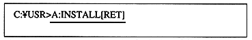

〈SUN version〉
Prepare the tape device.
〈HP version〉
Prepare for DAT.
| ------------------------------------ PCVersion FD SUN Version 8mm Tape HP Version DAT -------------------------------- ---- |
Insert a floppy disk into the software library floppy drive and execute the [INSTALL] command. Install in the current directory. Install all libraries in a directory called [SATURN] in the current directory. If there is no [SATURN] directory, create it.
If the floppy drive is A drive and the installation destination is C drive, it will be as follows.
